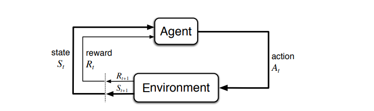

Introduction to RL¶
In supervised learning, the supervisor indicates to the agent the expected answer. The agent can correct its model based on the answer via gradient backpropagation, RLS, … (either for regression or classification). The exploration/exploitation trade-off : as exploiting can be harmful, shall I exploit what I know or should I look for a better policy ? Am I optimal, should I keep exploiting or stop ? \(\epsilon\)-greedy : take the best action most of the time and a random action from time to time.
Markov Decision Processes (MDPs)¶
{2}
S : State space
A : Action space
T : \(S\times A \to \pi(S)\) : Transition function
r : \(S \times A \to \mathbb{R}\) : Reward Function
An MDP describes a problem (it’s not a solution). It can be a stochastic/deterministic pb, with the generalized formulation : \(T(s^t, a^t, s^{t+1}) = p(s'|s,a)\), (s,a) being the current state/action.Rewards can be over states or over action/state pairs.
The goal of the agent is to find the policy \(\pi : S \times A\) maximizing an aggregation of rewards on the long run.
Theorem : for any MDP, it exists a deterministic policy that is optimal}
Aggregation Criterion : computation of value functions assumes the choice of an aggregation criterion (discounted, average,…), and can be hard to compare as a sum over infinite horizon may be infinite.
mere sum (on finite horizon N) : \(V^\pi (s_0) = r_0 + r_1 + ... + r_N\)
average on window k : \(V^\pi (s_0) = \frac{r_0 + r_1 + ... + r_k}{k+1}\)
discounted criterion: \(V^\pi (s_0) = \sum_{t=0}^{\inf} \gamma^t r(s_t, \pi(s_t))\), with \(\gamma \in [0,1]\)
Rmk : \(\gamma \to 0\) sensitive to immediate rewards, whereas \(\gamma \to 1\) future rewards are as important as immediate rewards.
Markov Property: \(p(s^{t+1}|s^{t}, a^{t}) = p(s^{t+1}|s^{t}, a^{t}, s^{t-1}, a^{t-1}, ..., s^0, a^0)\)
An MDP defines \(s_{t+1}, r_{t+1}\) as \(f(s_t, a_t)\). In an MDP, a memory of the past does not provide any useful advantage, via the following property. Reactive agents \(a_{t+1} = f(s_t)\) can be optimal. But this assumption is very strong and not verified in practice !
Dynamic Programming¶
Value function : \(V^{\pi} : S \to \mathbb{R}\) aggregation of rewards on the long run for each state (by following the policy \(\pi\). A vector with one entry per state.
Action-Value Function : \(Q^{\pi} : S\times A \to \mathbb{R}\) : aggregation of rewards on the long run for doing each action in each state (and then following \(\pi\)). A matrix with one entry per (state, action).
Bellman Equations:
deterministic : \(V^{\pi}(s) = r(s, \pi(s)) + \gamma \sum_{s'} p (s'|s, \pi(s)) V^{\pi}(s')\)
stochastic \(\pi\) : \(V^{\pi}(s) = \sum_{a} \pi(s,a) \left[ r(s, a) + \gamma \sum_{s'} p (s'|s, a) V^{\pi}(s') \right]\)
In dynamic programming, \(T\) and \(r\) are given. The agents knows everything about the transition function \(T\) and the reward function. From that knowledge, it can iteratively compute an optimal value function. In Reinforcement Learning, we don’t know T, nor \(r\) in advance, meaning we have to build the optimal policy \(\pi^{*}\) without T or \(r\).
Model-Free Reinforcement Learning¶
Model-Free approach : build \(\pi^{*}\) without estimating \(T\) or \(r\) (actor critic, …), opposed to model-based approach where we build a model of \(T\) and \(r\) and use it to improve the policy (via dynamic programming).
Incremental Estimation / Immediate reward in state s : \(E_{k+1}(s) = E_k(s) + \alpha ( r_{k+1} - E_k(s))\)
This converges to the true average (slower of faster depending on \(\alpha\)) without storing anything (except for k and \(E_k\)).
Temporal Difference Error : whose goal is to estimate the value function \(V(s)\). If \(V(s_t)\) and \(V(s_{t+1})\) were exact, then we’d get \(V(s_t) = r_t + \gamma V(s_{t+1})\). Hence, \(\delta_t = r_t + \gamma V(s_{t+1}) - V(s_t)\) represents the error between \(V(s_t)\) and the value it should have given to \(r_t\).
As a rmk, \(\delta_t > 0\) means you underestimated the value of the current state.
Policy Evaluation - TD(0) : given policy \(\pi\), the agent perform a sequence \(s_0, a_0, r_1, ...., s_t, a_t, r_{t+1}\).
At each step, \(V(s_{t}) \longleftarrow V(s_{t}) + \alpha(r_{t+1} + \gamma V(s_{t+1}) - V(s_{t}))\)
Limitations : Although TD(0) evaluates V(s), one can not infer \(\pi(s)\) from \(V(0)\) without knowing the transition function T, ie one must know which action \(a\) leads to the best \(V(s)\).
Solutions : (1) work with Q(s,a) (2) learn a model of T with model-based RL (3) opt for Action-Critic methods that update V and \(\pi\)
SARSA¶
SARSA - State Action Reward State Action :
For each observed (\(s_t, a_t, r_{t+1}, s_{t+1}, a_{t+1}\)) :
\(Q(s_t, a_t) \longleftarrow Q(s_t, a_t) + \alpha \left[ r_{t+1} + \gamma Q(s_{t+1}, a_{t+1}) - Q(s_t, a_t) \right]\)
SARSA is an on-policy method, as you have to decide what action \(a_{t+1}\) to do in the next time step.
Q-learning¶
Q-learning :
For each observed (\(s_t, a_t, r_{t+1}, s_{t+1}\)) :
\(Q(s_t, a_t) \longleftarrow Q(s_t, a_t) + \alpha \left[ r_{t+1} + \gamma \max\limits_{a \in A} Q(s_{t+1}, a) - Q(s_t, a_t) \right]\)
Q-learning is an off-policy method, as it takes the best action in the next step.
Q-learning = learn the action-value function \(Q(s,a)\). How good it is to perform a particular action in a particular state.
In discrete space, one builds a memory table / a Q-tables Q[s,a] to state Q-values for all possible combination of \(s\) and \(a\). “Q-learning is about creating the cheat sheet Q”.
Q-learning Algorithm :
Initialisation : start with \(Q_0(s,a)\) for all s,a. Get initial state \(s\).
For k=1,.., till CV :
Sample action \(a\) and get next state \(s'\)
If \(s'\) is terminal : target = \(R(s,a,s')\), sample new initial state \(s\)
Else, target = \(R(s,a,s') + \gamma \max\limits_{a'} Q_k(s', a')\) - \(Q_{k+1}(s', a') = (1-\alpha)Q_k(s, a) + \alpha \times \mbox{target}\). \(s \longleftarrow s'\)
Both SARSA and Q-learning have proved convergence given \(\infty\) exploration.
Q-learning in practice consists in building a table (states x actions) - Q-table - where you apply the update equation after each action. Problem : it is very slow, and if states and action states are too large, the memory of Q explodes. One solution would be to use a deep-network (DQN) to approximate Q(s,a).
Actor Critic¶
Idea : learn the value function in addition to the policy, using two models : a critic that updates the value function parameter (can be either \(Q_w(a|s)\) or \(V_w(s)\)) and a critic that updates the policy parameter \(\theta\) for \(\pi_\theta(a|s)\) in the direction suggested by the critic.
Actor-Critic : {2}
The agent manages two representations at the same time :
a critic, updated with TD from state and reward. It computes the TD error \(\delta_k\) and update \(V_k(s) \longleftarrow V_k(s) + \alpha_k\delta_k\)
an actor, updated depending on the critic’s update. \(P^{\pi}(a|s) = P^{\pi}(a|s) + \alpha_k' \delta_k\)

Note that there are two learning rate \(\alpha\) (critic) and \(\alpha^{'}\) (actor)
Quick illustration : if you compute the TD error and find a \(\delta > 0\), from a state \(s\) by taking action \(a\). It means the value of the state is higher that you thought, hence the action that you just performed is better than what you thought, thus you need to increase the probability of taking that action.
Simple action-value AC algorithm :
Initialize \(s, \theta, w\) at random
Sample \(a \sim \pi_\theta(a|s)\) - for t = 1, .., T do :
sample reward \(r_t \sim R(s,a)\) and get next state \(s' \sim P'(s'|s,a)\)
sample next action \(a' \sim \pi_\theta(a'| s')\)
update policy parameter \(\theta\) using
\(\theta \longleftarrow \theta + \alpha_\theta Q_w(s,a) \nabla_\theta \mbox{ ln } \pi_\theta(a|s)\) - Compute TD error (correction) for action-value at time t : \(\delta_t = r_t + \gamma Q_w(s', a') - Q_w(s,a)\) and use it to update the parameter of the action-value function : \(w \longleftarrow w + \alpha_w \delta_t \nabla_w Q_w(s,a)\) - update \(a \longleftarrow a', s \longleftarrow s'\)
Remark : two learning rates \(\alpha_\theta, \alpha_w\)